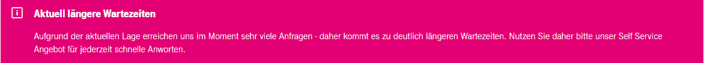

Hallo,
da ich am 31.10.2020 aus meiner Wohnung ausziehe, habe ich am 24.09.2020 ein Kündigungsschreiben (mit Kündigungsdatum: 31.10.2020) über das Kündigungsformular ( https://www.magenta.at/kuendigungskontakt#/cable ) verschickt (im Formular habe ich das Kündigungsschreiben mit allen Details als PDF-Dokument angehängt!) und einige Tage *vergeblich* auf eine Bestätigung gewartet.
Leider kam die Bestätigung allerdings nicht, sodass ich daraufhin nochmals am 29.09.2020 die Kündigung über das Kündigungsformular (wieder mit dem selben PDF Dokument im Anhang) abgeschickt habe.
Um auf Nummer sicher zu gehen habe ich auch am 30.9.2020 nochmals über den offiziellen Whatsapp-Kündigungskontakt (auf dieser Seite: https://www.magenta.at/kuendigung ) via Handy meine Kündigung per 31.10.2020 mitgeteilt.
Ein Mitarbeiter hat mir geantwortet, dass er die Kündigung soeben veranlasst hat und er mir eine Bestätigung per Mail zukommen lassen will.
Zur Legitimation habe ich ihm auch noch mein Geburtsdatum mitgeteilt.
Allerdings habe ich (außer dieser Whatsapp-Antwort wo auch das Kündigungsdatum 31.10.2020 bestätigt wurde) noch immer keine schriftliche Bestätigung per Email erhalten.
Den Mitarbeiter der mir im Whatsapp geantwortet hat, konnte ich seitdem nicht mehr erreichen.
Ich bitte Sie um Zusendung einer Kündigungsbestätigung (mit Bestätigung des Kündigungstermins).
Ich werde morgen es nochmals telefonisch probieren und notfalls im Magenta Shop vorbeischauen.
Ich verstehe nicht wieso eine Kündigung wegen eines Auszugs aus einer Wohnung so kompliziert ablaufen muss...
Das nächste Mal erledige ich alles nur mehr per eingeschriebener Post...
Bearbeitet von rallevor 28 Minuten schrieb ralle:Ich bitte Sie um Zusendung einer Kündigungsbestätigung (mit Bestätigung des Kündigungstermins).
Hallo @ralle
Du befindest dich hier in einer Community (Kunden helfen Kunden) und nicht im direkten Support. Bitte kontaktiere mit deinem Anliegen das Magenta Serviceteam. AFAIK kommt es derzeit auch zu längeren Bearbeitungszeiten daher kann es etwas dauern bis du eine Bestätigung erhältst. Daher bitte ich dich um etwas Geduld!
Screenshot der Magenta Kontakt Seite: 
Bearbeitet von Rexalius2000
Hallo Ralle,
der Versand der Kündigungsbestätigung wird ein paar Tage nach Eingabe der Kündigung erstellt. Bitte hab noch ein wenig Geduld, wenn dir der Mitarbeiter die Kündigung am Telefon bestätigt hat, wird diese vorgemerkt sein. Behalte dir zur Sicherheit den WhatsApp Verlauf auf, bis du die Bestätigung erhalten hast.
Liebe Grüße
Steffi
.png.07583d8c9bcebe8b009794a8570a1712.png){kind=link}